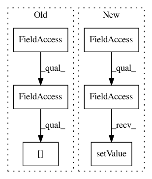

50ce2bcf18b82c182667ba8291d2a6c556ce16e3,ilastik/applets/thresholdTwoLevels/opThresholdTwoLevels.py,OpThresholdTwoLevels,setupOutputs,#OpThresholdTwoLevels#,22
Before Change
self.channelSlice=None
if hasChannels and self.InputImage.meta.shape[axistags.channelIndex]>1:
self.channelSlice = slice(self.Channel.value, self.Channel.value+1, None)
elif hasChannels and self.InputImage.meta.shape[axistags.channelIndex]==1:
self.channelSlice = slice(None, None, None)
shape = list(self.InputImage.meta.shape)
shape[axistags.channelIndex]=1
After Change
assert len(self.InputImage.meta.shape) <= 4, "This operator doesn"t support 5D data."
self._opSmoother.Input.connect( self._opChannelSlicer.Slices[ self.Channel.value ] )
self._opLowThresholder.Function.setValue( lambda a: (a > self.LowThreshold.value).astype( numpy.uint8 ) )
self._opHighThresholder.Function.setValue( lambda a: (a > self.HighThreshold.value).astype( numpy.uint8 ) )
// Copy the input metadata to the output
self.Output.meta.assignFrom( self.InputImage.meta )
In pattern: SUPERPATTERN
Frequency: 3
Non-data size: 6
Instances
Project Name: ilastik/ilastik
Commit Name: 50ce2bcf18b82c182667ba8291d2a6c556ce16e3
Time: 2013-03-05
Author: bergs@janelia.hhmi.org
File Name: ilastik/applets/thresholdTwoLevels/opThresholdTwoLevels.py
Class Name: OpThresholdTwoLevels
Method Name: setupOutputs
Project Name: ilastik/ilastik
Commit Name: 05fefb031b5668b8e823298257d907b67d8a2ca0
Time: 2012-09-05
Author: bergs@janelia.hhmi.org
File Name: ilastik/applets/vigraWatershedViewer/opVigraWatershedViewer.py
Class Name: OpVigraWatershedViewer
Method Name: setupOutputs
Project Name: ilastik/ilastik
Commit Name: bfedf23495862daaa4dceecfc8dd5d579ecb5efd
Time: 2013-04-08
Author: anna.kreshuk@iwr.uni-heidelberg.de
File Name: ilastik/applets/thresholdTwoLevels/opThresholdTwoLevels.py
Class Name: OpThresholdTwoLevels
Method Name: setupOutputs